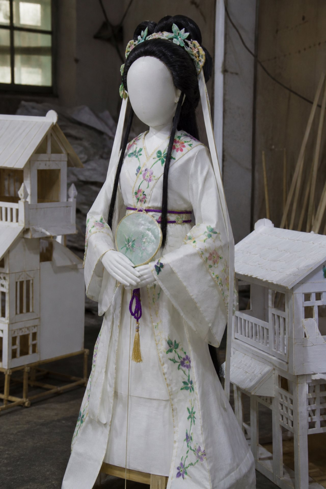

订货单·丧用
复写第三联发脆。井秋白按过指印，印色偏淡，像垫纸吸走过。柜台用回形针把这一联和发票别在一起，别针已经松了，两张随时会滑开。
抄自柜台复写。本页只能对户名和订的品类，不能证明货已经在炉里，也不能证明后院那叠红金是这一单。
| 栏 | 字 |
|---|
| 户名 | 邵庭 |
| 丧主 | 井秋白 |
| 窗口 | 五七前夜待焚 |
| 品类 | 童女 一、楼库 一、金山 一 |
| 落点 | 按邵庭丧扎收，待焚区西侧 |
| 备注 | 不接开业件。开业另票。 |

童女纸面空白，没有五官。井秋白催的是这一件，不是狮头。单上没有开业彩扎四个字。若把红金写成这一栏，户名会对不上。
隔壁夹着另一张票。户名换了。
夹着的发票 · 她催的原文